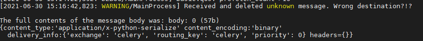
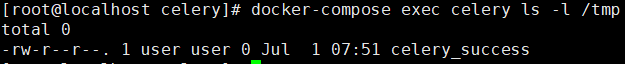

Celery <4.0 Redis unauthorized access + Pickle deserialization exploit¶
Celery is a simple, flexible, and reliable distributed system that processes a large number of messages while providing the tools needed to operate and maintain such a system. It is a task queue focused on real-time processing and also supports task scheduling.
In Celery <4.0 version, Pickle is used by default for serialized task messages. When the queue service（e.g. Redis/RabbitMQ/RocketMQ ） used has an unauthorized access problem, the Pickle deserialization vulnerability can be used to execute arbitrary code.
Vulnerability Environment¶
Execute the following command to start Celery 3.1.23 + Redis:
docker compose up -d
Exploit¶
The exploit script exploit.py only supports use under python3
pip install redis
python exploit.py [Host IP]
View Results：
docker compose logs celery
You can see the following task message error：

docker compose exec celery ls -l /tmp
You can see that the file celery_success was successfully created

Reference¶
https://docs.celeryproject.org/en/stable/userguide/configuration.html
https://www.bookstack.cn/read/celery-3.1.7-zh/8d5b10e3439dbe1f.md#dhfmrk
https://docs.celeryproject.org/en/stable/userguide/calling.html#serializers
https://www.jianshu.com/p/52552c075bc0
https://www.runoob.com/w3cnote/python-redis-intro.html
https://blog.csdn.net/SKI_12/article/details/85015803